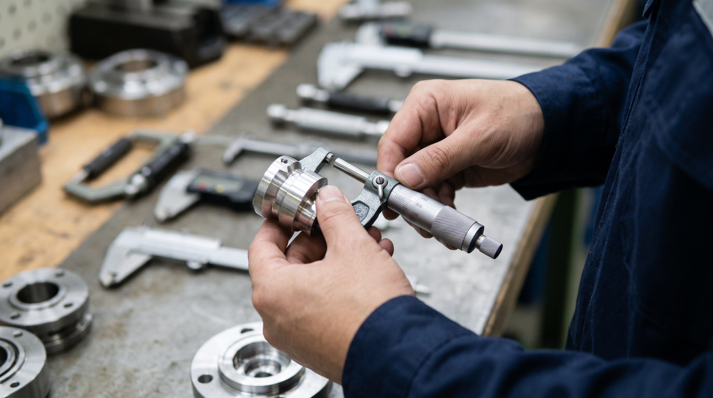
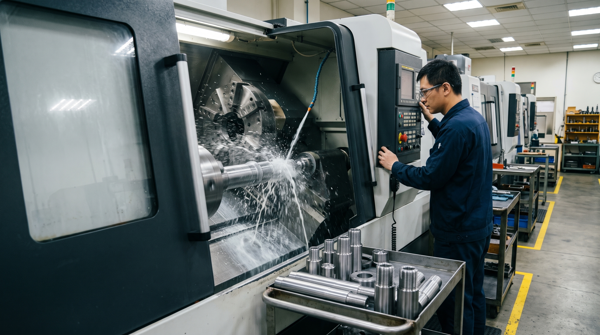
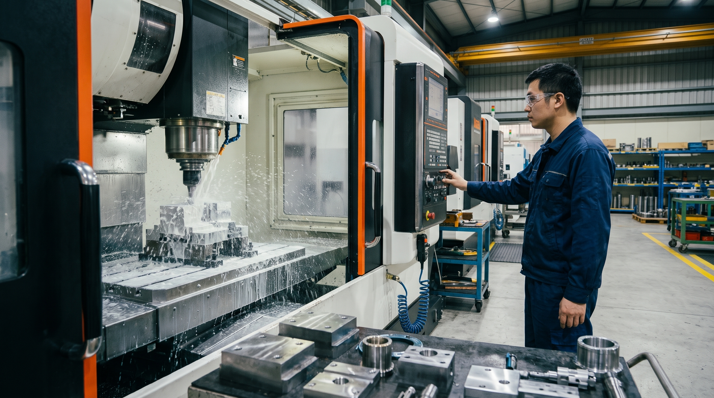
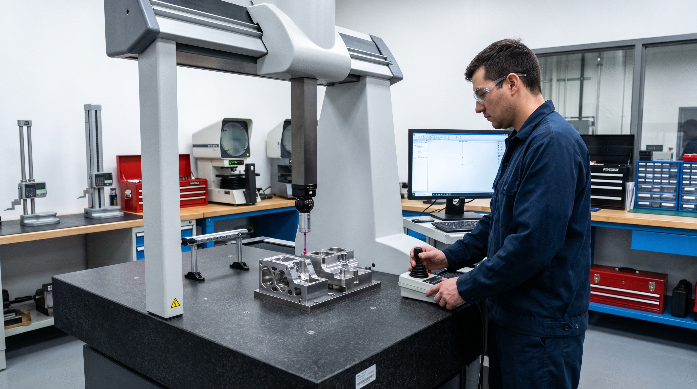
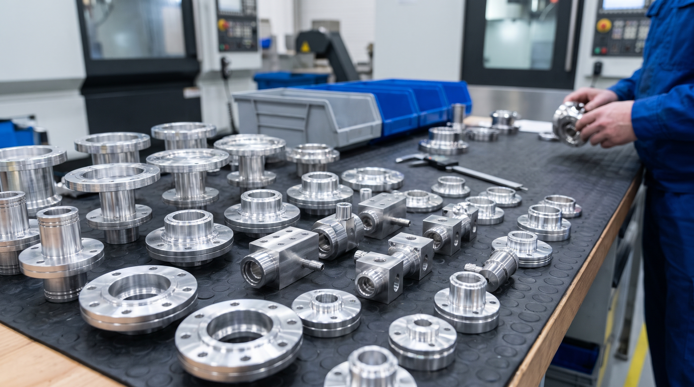
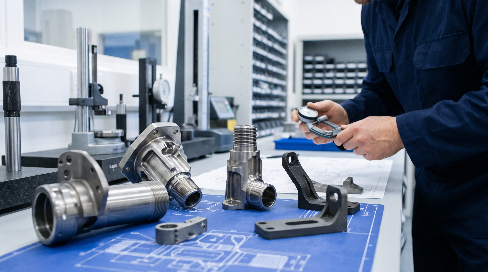
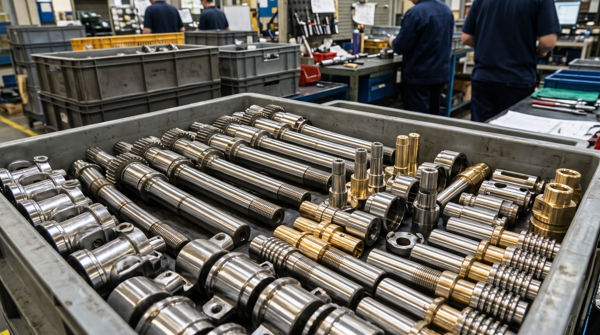
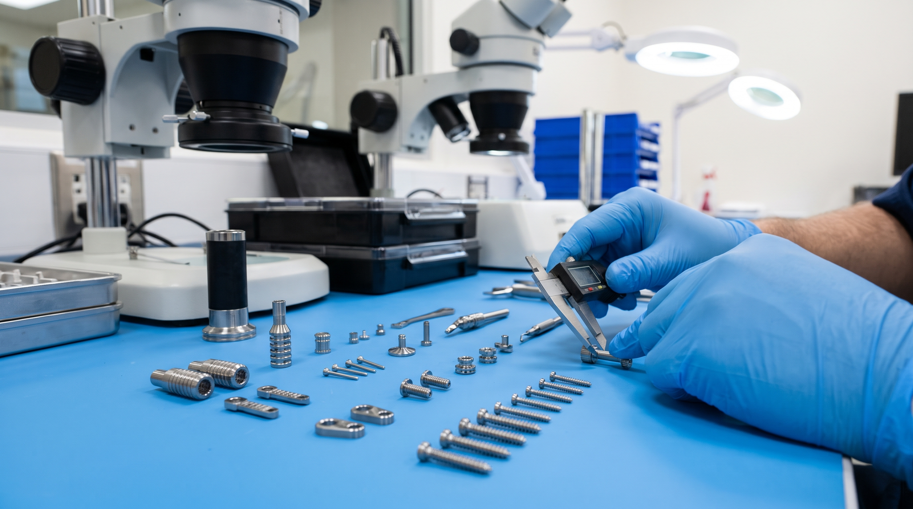
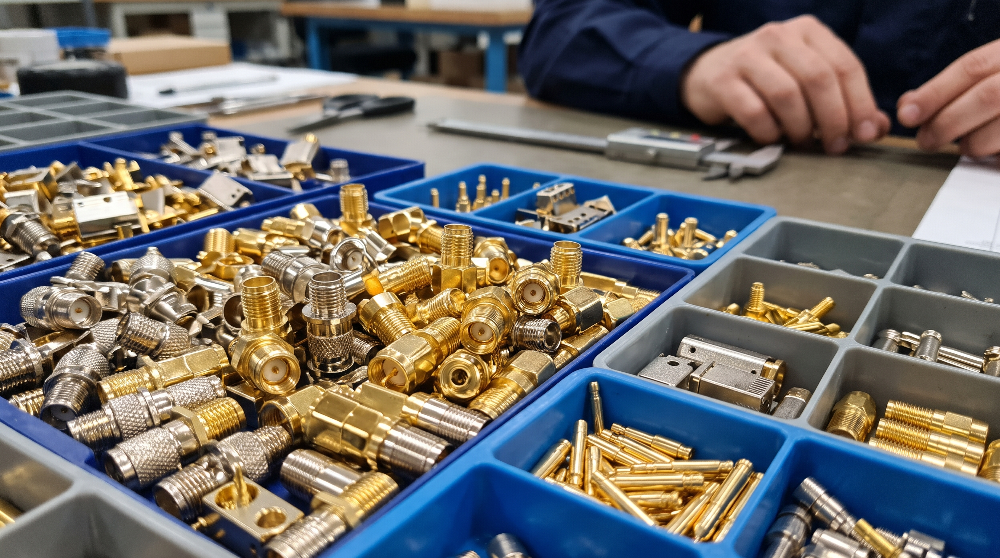
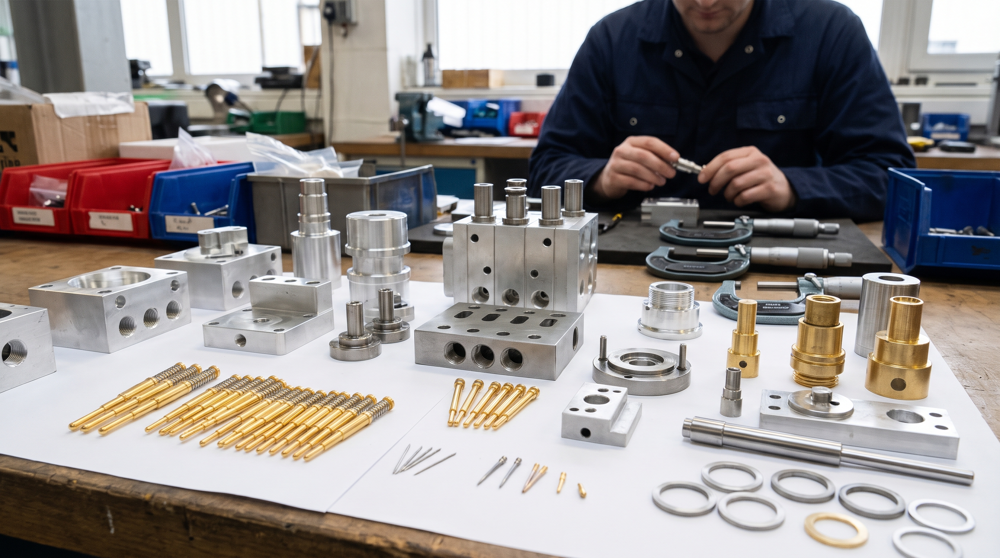

上元先進股份有限公司為專業的精密零件加工與檢測服務廠商。我們擁有多年的 CNC 車銑複合零件加工、自動車床加工、CNC 銑床加工之豐富經驗。
我們秉持一流的加工設備與精密的量測設備，擁有一群不斷提升加工精度的技術團隊及嚴格控管品質的品保人員，配合完善的流程，以最嚴格的標準控管及把關，給予客戶最好的產品與服務。

配置先進加工設備與恆溫檢測室，確保每件產品皆符合嚴苛的圖面公差要求。

擁有多台高精度 CNC 車銑複合機與自動車床，最大加工外徑與長度可依需求彈性調整，一次夾持完成車削、銑削、鑽孔與攻牙等高複雜工序。

配備高速切削銑床與多軸加工中心，適合各式複雜幾何形狀的零件開發、模具打樣與中批量生產，提供精細的表面處理與尺寸精度。

設有精密量測室，配備 CMM 三次元量測儀、光學投影機、表面粗度儀與各式校準量具，落實進料檢驗 (IQC)、製程檢驗 (IPQC) 與出貨檢驗 (FQC)。
我們以完善的 SOP 流程，為每一位客戶的產品做最嚴密的把關，給予最高的產出品質。
深入探討產品材質、公差、表面處理，提供合理的客製化報價。
編寫 CNC 加工路徑，選配最佳刀具與夾治具，快速提供初樣確認。
標準化作業量產，現場品保定時抽檢首件與巡檢，確保穩定性。
全尺寸與表面狀態最終檢驗，附上檢驗報告，並包裝妥善準時出貨。
累積多年加工經驗，產品廣泛應用於高科技、重工業、醫療與航太等多元化領域。

精準加工真空腔體零件、晶圓輸送機械件、法蘭接頭及各種高精密耐化學腐蝕之工業結構件。

選用高強度、耐高溫的鈦合金與超合金材料，嚴格依圖加工複雜的航太聯接器與防護組件。

車削各類高耐磨轉向與變速器零件、軸件、自控感測器殼體，滿足高壽命、耐疲勞的安全標準。

微細加工技術處理不銹鋼、鈦合金等生醫級材質，用於手術工具、牙科與骨科植入物部件、檢測器材。

加工高頻、低損耗之射頻 (RF) 連接器零部件、基站通訊組件、同軸適配器，確保極佳導電與訊號傳輸。

專業代工自動化手臂配件、氣動元件、金屬密封件、多規格測試探針與客製化檢驗治具。